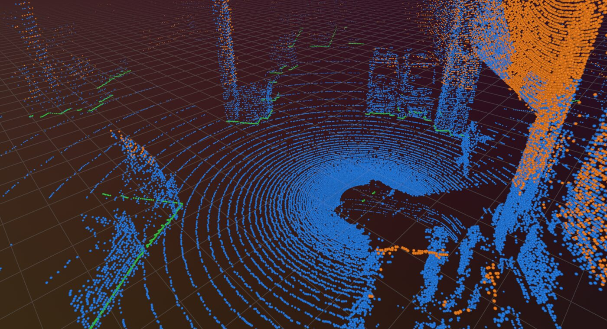

Dataset generation for logistics perception — TU Dortmund, 2026 – present
Ten time-synchronised sensors — three LiDARs, two depth cameras and five global shutter RGB cameras — record a logistics environment simultaneously, producing data at gigabytes per second. Synchronisation across the stack is what makes the recordings usable as training data: every LiDAR return has a matching set of camera frames at the same instant. Built the data preparation and processing pipeline: taking terabyte-scale raw recordings off the rig and turning them into aligned, indexed material that annotation tooling and model training can actually consume.
